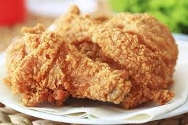
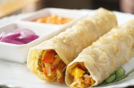
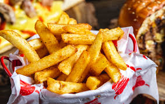

A burger is a patty of ground beef grilled and placed between two halves of a bun. Slices of raw onion, lettuce, bacon, mayonnaise, and other ingredients add flavor. Burgers are considered an American food but are popular around the world. In Japan, teriyaki burgers are popular.

Broasting is a special cooking process that combines pressure frying and traditional shallow frying to produce juicy chunks of fried chicken with a crispy outer layer. The process begins by marinating the chicken in spices and seasonings before placing it in a sealed pressure cooker containing hot oil.

1. Individual portions of bread that have been baked into various shapes. There are many different types of dough that can be used for rolls and many different shapes, such as round buns, knotted rolls, rolled wedges and folded rounds.

french fries, side dish or snack typically made from deep-fried potatoes that have been cut into various shapes, especially thin strips. Fries are often salted and served with other items, including ketchup, mayonnaise, or vinegar.